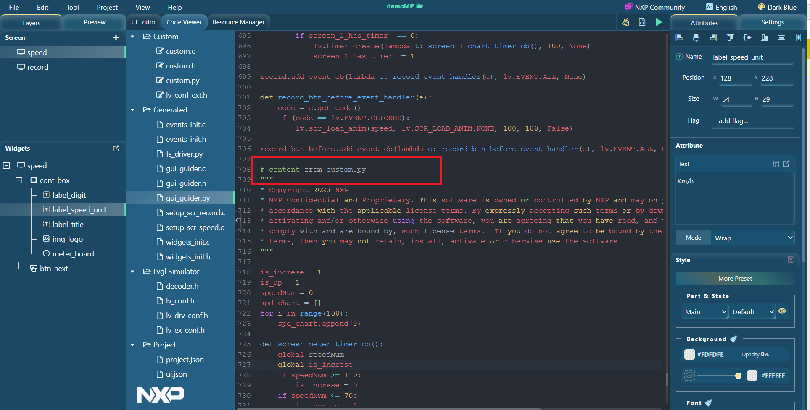

tutoeials
experience_with_micropython_in_gui_guider
add_custom_code
as_event_action
As event action
Custom Python code options
provides a description of the custom Python code options.
Figure:
Python code options

Custom Python code options
Label
Description
1
Event Type: Customer code
2
Event Code Type: Python code
3
Global variable or function
4
Codes that are wrapped in event callback